B01 · Battle log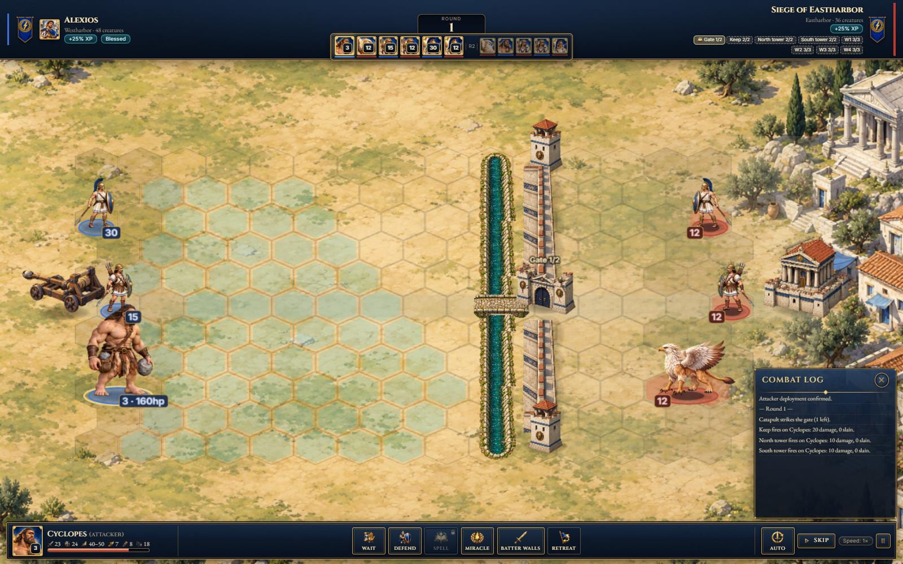
B02 · Battle miracles book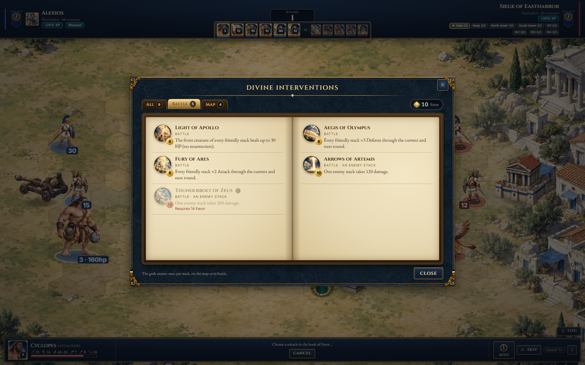
B03 · Battle spell casting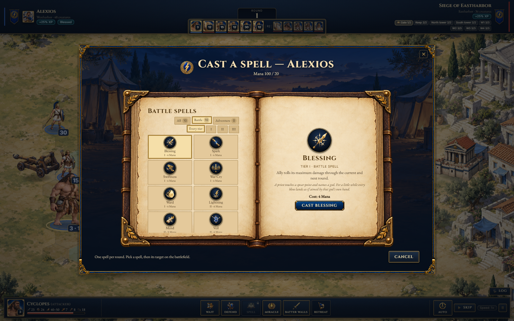
B04 · Retreat confirmation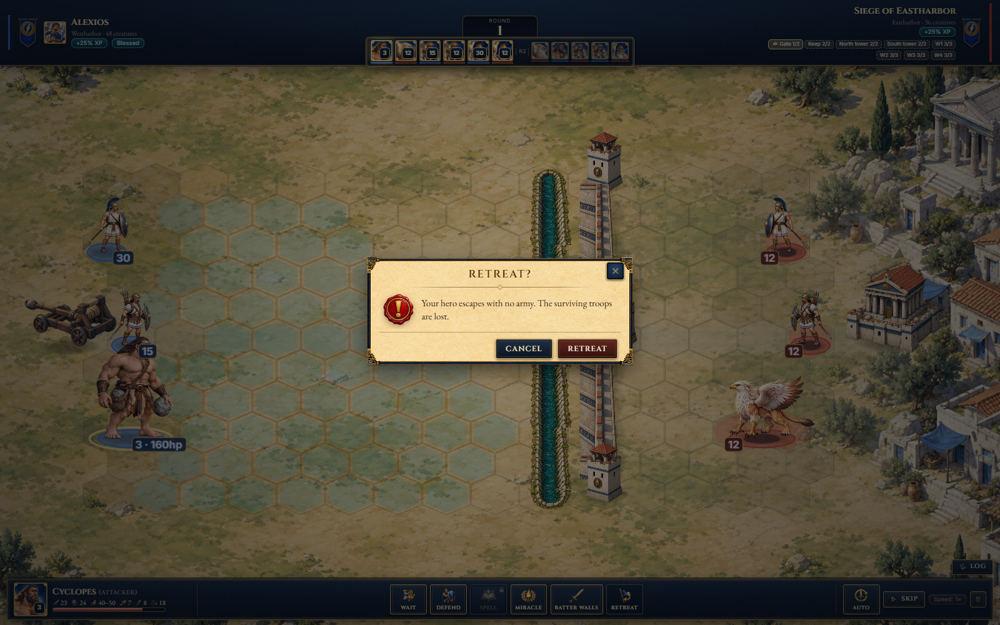
B05 · Surrender confirmation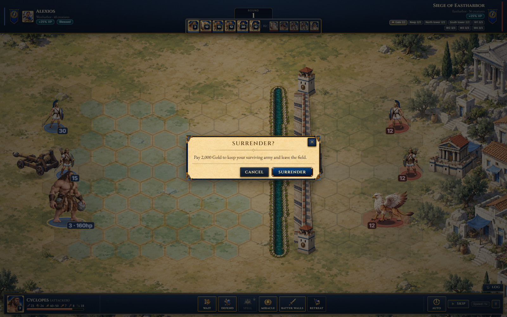
B06 · Siege defender selection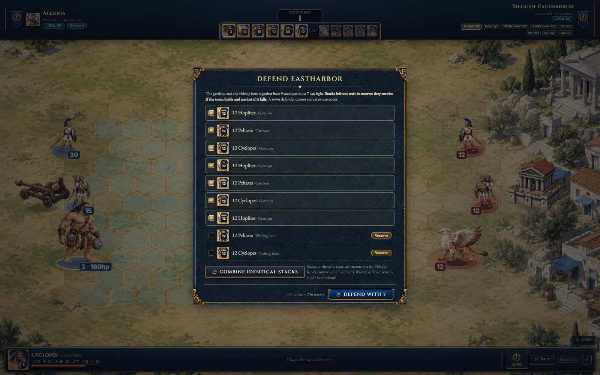
D01 · Mission briefing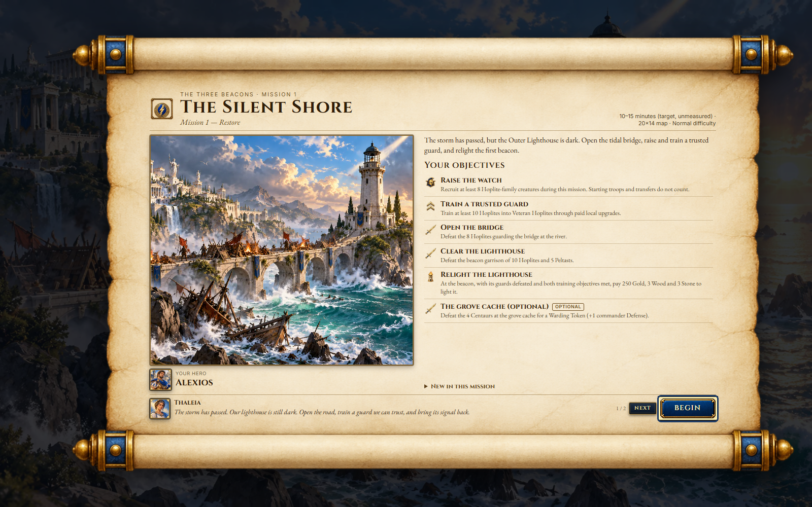
D02 · Pause menu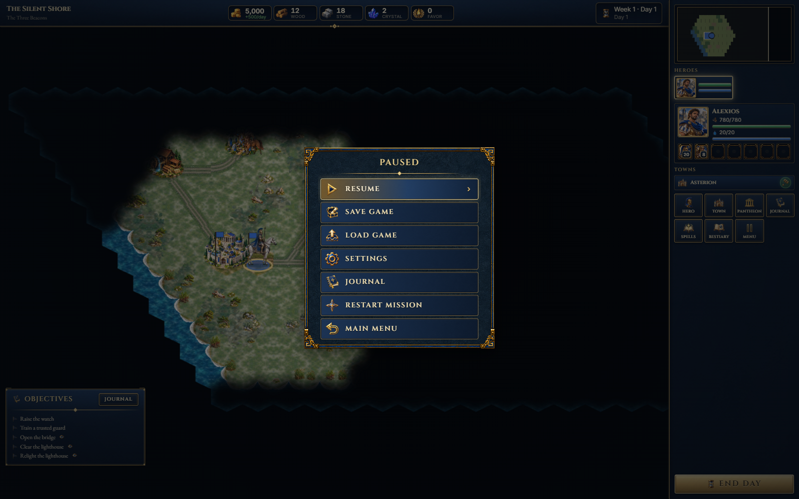
D03 · Save game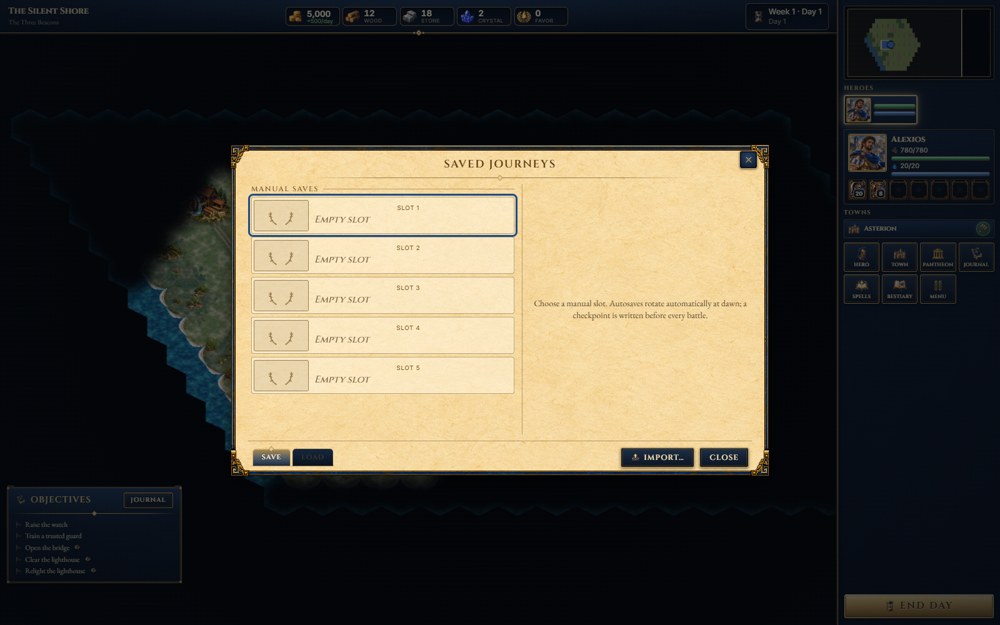
D04 · Load game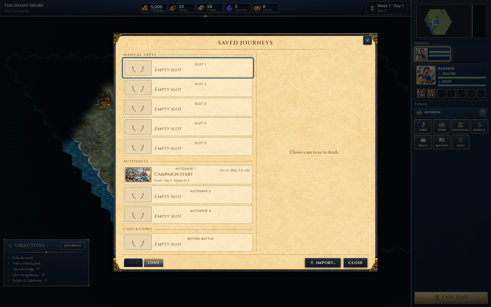
D05 · Keyboard shortcuts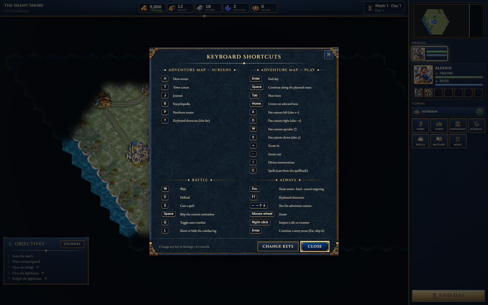
D06 · Creature stack inspection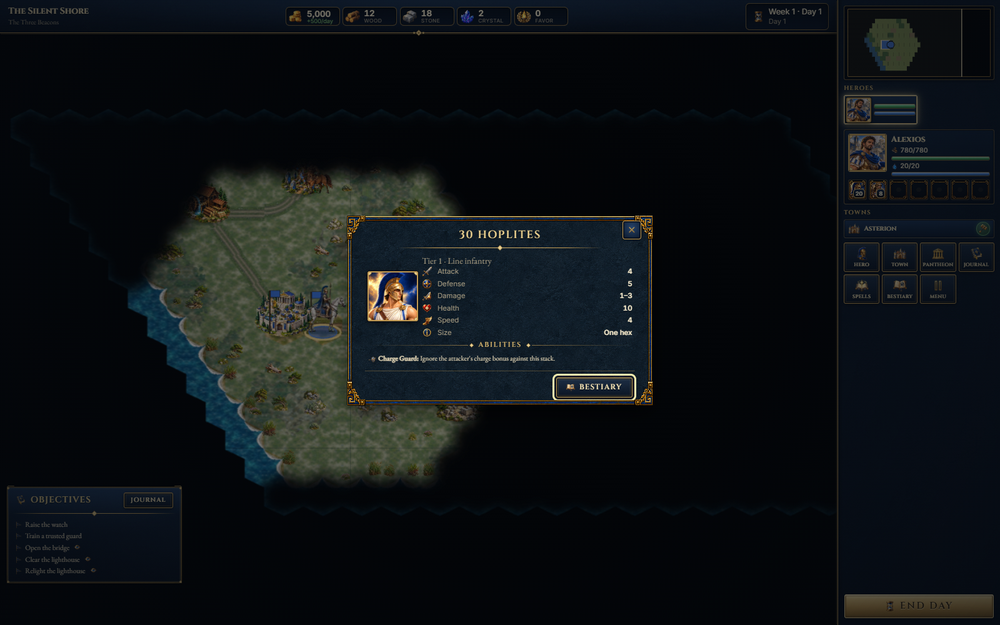